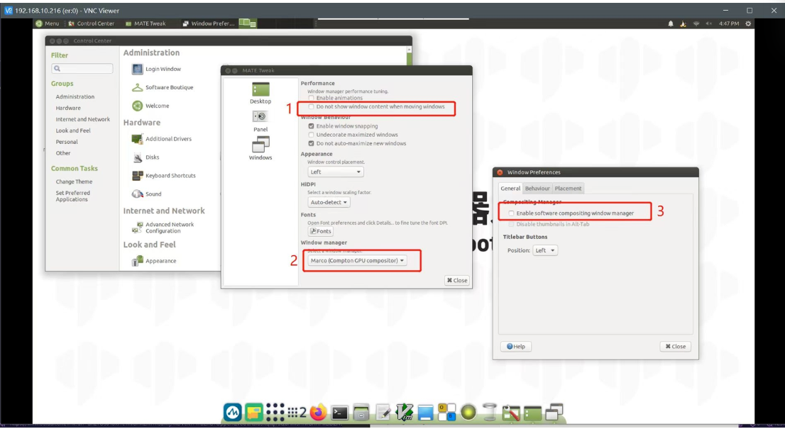
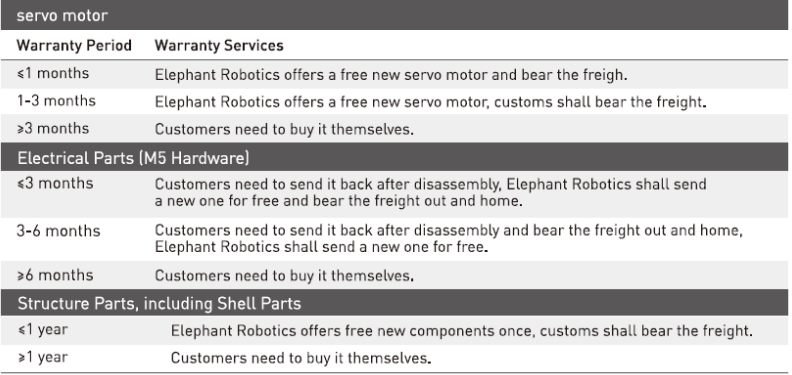
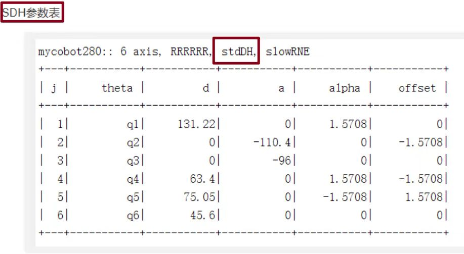

Other Issue
Q: How to reset to factory settings when the machine is abnormal?
Restoring to factory settings mainly involves resetting the image, PID, and zero position. The following is the reset method:
About resetting the image: When resetting the image, all contents in the original system will be cleared. If there are important files, please save them in advance. For the method of resetting the image, please refer to the system usage chapter of gitbook
About resetting pid: Generally, when the machine has severe joint shaking, abnormal joint movement speed, and joints curled up, the pid can be reset. For the reset method, refer to: https://drive.google.com/file/d/1UWhaaSTuwLFImuEGY1J2tvgxTQDwWxK_/view?usp=sharing
About resetting zero position: Generally, when the machine has an incorrect zero position or the joint limit is abnormal, the zero position can be recalibrated. For the reset method, refer to: https://drive.google.com/file/d/1XtKH-ykKWPH0q9Z_YHwzkgwNKRhstHhi/view?usp=sharing
Q: Where is the download path for the urdf file?
- A: Please refer to the following path. The urdf of all mycobot models is in this path: https://github.com/elephantrobotics/mycobot_ros/tree/noetic/mycobot_description/urdf
Q: How long is the command transmission delay when controlling the motor through the robot's controller via serial port or socket communication? Is there a communication timing diagram? How about real-time performance?
There is no delay test data for serial or socket communication. According to the feedback from our development and use, the real-time performance is still quite high and there will be no lag.
Q: What is the base coordinate system of the mycobot pro 450 robot?

Q: Are the joints of 450 controlled by the serial bus?
A: Yes
Q: Is there more explanation about the understanding of coordinates?
A: The API for controlling coordinate movement is send_coords([x,y,z,rx,ry,rz], speed) x, y, z coordinates: Control the position of the end effector of the robot in space. Changing these coordinate values will move the robot to different spatial positions, thereby achieving positioning in three-dimensional space. rx, ry, rz attitude angles: Control the attitude or orientation of the end effector of the robot. These values are usually given in the form of Euler angles, describing the rotation of the end effector of the robot relative to the base coordinate system, and the order of Euler angles is zyx. Changing these values will rotate the end effector of the robot to different angles or directions. For example: When you adjust +X, this means that the position of the end effector of the current robot arm moves a certain distance along the positive direction of the X axis of the current end effector. This action will cause the robot to move in a certain direction as a whole. And when you adjust RX, this means that the attitude of the end effector of the current robot arm rotates a certain angle around the X axis of the current end effector. This action will cause the robot to rotate as a whole and the direction of the end effector will change. In general, the adjustment of +X and RX will directly affect the motion state of the robot arm. +X controls the movement of the position, while RX controls the change of attitude. If you want to see the changes more intuitively, we recommend that you use myblockly's serial control tool to adjust a parameter at a time and observe its changes in the coordinate system. Please note that when observing rx, ry, and rz, if you want to be more intuitive, please pay attention to adjusting x and ry when the J1 joint is 0, and adjusting y and rx when the joint is 90. You can refer to the coordinate system diagram below:


Q: Is there more explanation about the Offset of the DH parameter? Is the Offset rotated around z?
A: The DH parameter describes the geometric and kinematic relationship between adjacent links in the robot arm. In the DH parameter table, the Offset parameter indicates the effect of the previous link rotating around its z-axis on the position of the next link, that is, the offset when connecting two links. For the Offset parameter in the robot arm, it generally indicates the effect of the previous link rotating around its own z-axis on the position of the next link, rather than rotating around the z-axis of the next link. Therefore, Offset is not a rotation around z, but a displacement when connecting two links.
Q: What is the voltage range of the 450 robot arm power supply? How much is the instantaneous current? A: 24V ，9.2A
Q: If the servos of each axis are controlled and feedback is obtained, what is the shortest communication cycle?
A: This needs to be determined according to the speed. The minimum response time is 50ms
Q: Does the mycobot series machine have collision detection?
A: 450 has algorithmic collision self-interference, which has been integrated into the API for setting joint angles and coordinates
Q: How to deal with the VNC dragging jam?
A: If the jam is caused by dragging any window in VNC, you can make some configurations according to the picture below. The options need to be consistent with the picture below. After successful setting, the problem of VNC disconnection caused by dragging the window will be solved.

Q: When replacing the second joint of 450, I found that 4 screws were stripped. How to remove them?
Regarding the replacement of joints, the 4 screws do not need to be removed. Please remove the large screw in the middle, then fix the J2 joint body back, and then use force to pull out the entire coupling. I recorded a video for you to refer to for specific operations
Q: Is the joint torque information provided?
A: Our machines only provide the overall information of the entire joint, and do not provide the internal torque, voltage and current of the servo and motor actuator. The overall parameters of the robot arm are disclosed, such as repeatability, power supply voltage, etc.
Q: How do you understand the relationship between the two coordinates in the following figure?

A: If you want to view the transformation relationship between the coordinate system named "turtle1" and the coordinate system named "turtle2", you can use this command. In layman's terms, when you run this command, it will tell you the position and direction information of an object ("turtle1") relative to another object ("turtle2"). Just like you can know the position of a city relative to another city on a map
Q: The environment of ROS2 has been accidentally changed. Can I just delete the ROS and reinstall it myself?
A: Regarding the issue of reinstalling ROS, we do not recommend users to reinstall it themselves, because the construction of the ROS environment is relatively complex and prone to errors. If you need to reset the ROS environment, we recommend users to re-write the system image. For specific methods, please refer to Development and Use Based on ROS
Q: How to transfer files from the host to the virtual machine
A: Set up a shared folder as shown below to transfer files from the PC to the virtual machine

Q: How to solve the problem of excessive repeated positioning deviation after the robot arm is in place at the same position?
Both new and old machines can adjust pid to reduce deviation as much as possible.
Appendix: https://docs.qq.com/doc/DU0VhT2JNVUdNUEJS, https://drive.google.com/file/d/1UWhaaSTuwLFImuEGY1J2tvgxTQDwWxK_/view?usp=sharing However, the old version of the machine has gear gaps in the 2nd and 4th joints of the robot arm, which is easy to produce joint deviations under the action of gravity, which ultimately affects the end precision. The forces of the 2nd and 4th joints in these four sets of joint values are inconsistent, so the precision is also different. It is currently recommended to adjust through the program. When the machine reaches the point, you can read the point again at this point to check if there is a deviation. On this basis, adjust the specific deviation value of the single joint to achieve the effect of reaching the specified point.
Q: What is the difference between API and serial port instructions to directly control joints?
API provides a simplified and abstract interface to make development more efficient and easy, suitable for rapid development and integration. Serial port commands provide direct, low-level control, suitable for scenarios that require fine-tuning or development of custom functions, but are usually more complex to develop and debug. In general: Using serial port commands to directly control the robot arm is more flexible, but also more complex, requiring a deep understanding of the communication protocol; while using API control is simpler and more convenient, but may be limited by the functions and performance provided by the API.
Q: Windows runs git commands and reports errors

A: This is caused by not installing git. You need to install git first and then use git commands
Q: What is the difference between MDI and JOG?
A: MDI (Manual Data Input) is called the set value direct given operation mode. That is, after the upper controller directly sets the target position, speed, acceleration and deceleration, the axis automatically moves to the target position. MDI is also the most commonly used positioning function in practical applications. JOG moves continuously in a certain direction.
Q: Overseas maintenance policy form


Q: What is the latest supported version of pymycobot for each model?

Q: How to distinguish between standard and improved DH tables
sdh, std, standard mdh, modify, improved We provide standard DH tables. Customers can convert them by themselves if necessary. They are just two different description methods.

Q: How to check the data transmission speed? A: Use the following code:
import time
from pymycobot.mycobot import MyCobot
mc = MyCobot("COM8",115200, debug = True)
while 1:
mc.get_angles()

Write indicates the acquisition command sent, read indicates the returned message, and the left side indicates the time. Here, 518write + 611read are displayed, indicating that a get_angles read was completed in about 100ms, with a frequency of 10hz.
Q: A joint of the robot arm cannot move. How to deal with it?
A: You can use a python script to read the angle in a loop, and then manually turn the joint to see if the angle changes.
If there is a return value, check the following points and return the information to the technical support staff.
Use get_servo_status to check if the J2 servo has hardware problems such as undervoltage/overvoltage
Manually turn J2 to see if there is obvious resistance, and compare it with other joints; enable focus_servo(2) on J2 separately
Use the script to check if there is any problem with the parameters

Q: End zero position abnormality
A: After using the adaptive gripper to grip objects for a long time, the gripper and end zero position abnormality will occur, and the gripper needs to be stationary.
Q: What is forward kinematics and inverse kinematics?
A: Forward kinematics refers to solving the position and posture of the robot's end effector (such as the gripper of the robot arm) in Cartesian space when the angles (or displacements) of each joint of the robot are known. It is implemented in the get_coords() API, but the specific algorithm is not public. Inverse kinematics is the opposite of forward kinematics. It refers to solving the angles (or displacements) of each joint of the robot when the position and posture of the robot's end effector in Cartesian space are known. write_coords(), send_coords()